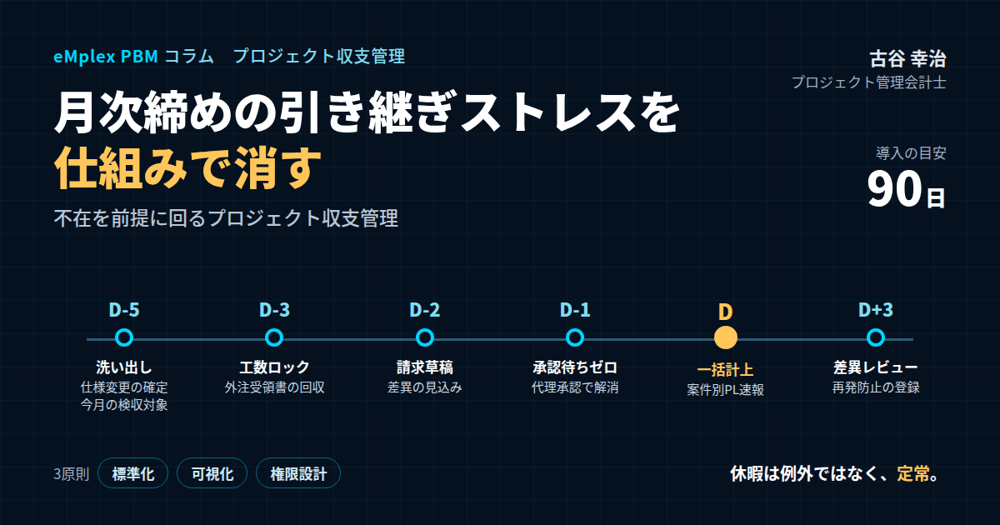

月次締めの引き継ぎストレスを仕組みで消すプロジェクト収支管理―不在を前提に回る月次締めのつくり方
結論：休暇は「例外」ではなく「定常」。不在を前提に回る月次締めへ
最初に結論を申し上げます。月末月初の引き継ぎのストレスは、担当者の努力や責任感の不足から生まれるものではありません。特定の人がいなければ回らないように作られた業務の設計が、必然的に生み出しているものです。だからこそ、解決の鍵は、個人の頑張りではなく仕組みにあります。休暇や突発的な不在を「例外」ではなく「定常」として捉え、誰が不在でも同じ手順で締められる状態を、標準化・可視化・権限設計の三つで作り上げること。それが、プロジェクト単位で収支を管理する会社の月次締めを、止まらないものにする根本的な解決策です。
月末月初は、プロジェクト型ビジネスにとって最も慌ただしい時期です。顧客への請求書の起票、成果物の検収の確定、社員の工数のロック、協力会社への外注費の計上、経費の精算の締め。こうした締めの業務が、わずか数日の間に集中します。そのさなかに、担当者が長期の休暇を取っていたり、急な体調不良で休んだりすると、現場と経理の双方で業務が止まります。
「この案件の検収は、どこまで進んでいるのか誰に聞けばいいのか分からない」「承認者が会議続きで、承認が滞留して計上が遅れる」「前任者の個人的なメモが読み解けず、手戻りが発生する」。こうした、いわゆる引き継ぎのストレスが、月末月初のたびに積み上がっていきます。そして、そのしわ寄せは、残った担当者の長時間労働や、月次決算の遅れ、さらには計上の誤りという形で表れます。
私はプロジェクト管理会計の専門家として、これまで200社を超えるプロジェクト型企業の経営管理を支援してきました。その中で、月次締めが特定の担当者に依存している会社を数多く見てきました。経理のベテランが一人で全案件の計上の判断を担っている会社。プロジェクトマネージャーが休むと、その案件の検収の状況が誰にも分からなくなる会社。承認者が一人しかおらず、その人が出張に出ると締めが止まる会社。どの会社でも、担当者は懸命に働いていました。問題は人ではなく、仕組みの側にあったのです。
新卒で入社した朋友建設でも、月末になると、工事ごとの出来高や外注費の確認のために、現場と本社の間で電話とファクスが飛び交っていました。現場の担当者が不在だと、その工事の数字だけが揃わず、決算の取りまとめが遅れる。そうした光景が当たり前でした。会社が和議という局面を迎える過程で、数字が揃うまでに時間がかかることが、経営の判断の遅れにつながっていたことを、私は身をもって知りました。
私自身、エンプレックスでCFOを務めていた頃、上場企業グループの一員として、月次決算を限られた日数で締めることが求められていました。案件の数が多く、計上の判断が案件ごとに異なる中で、締めを早く、正確に行うためには、特定の担当者の頭の中にある判断を、誰もが参照できるルールに置き換える必要がありました。計上の基準を文書にし、締めの日程を逆算して決め、承認の代理の仕組みを整えたことで、担当者が休暇を取っても、月次決算は予定どおりに締まるようになりました。休暇を取りやすくなったことは、担当者の働き方にとっても大きな変化でした。
本稿では、プロジェクト単位で収支を管理する会社の、月末月初の「あるある」を整理したうえで、引き継ぎのストレスが生まれる構造、属人化の典型的なパターンとそのリスク、解決のための三つの原則、締めの日程を逆算した運用、案件ごとの引き継ぎの資料の標準、そしてシステムの活用と導入のロードマップまでを、実務の視点から具体的にお伝えします。
月次締めの引き継ぎの仕組みを整えることは、単に業務を効率化するだけではありません。案件ごとの収支の数字を、毎月確実に、正確に経営に届けることで、経営の判断の質を支えることにつながります。月次の数字が遅れれば、経営の判断も遅れます。止まらない月次締めは、経営の時間を守るための土台なのです。
本稿で扱う月次締めは、経理部門だけの仕事ではありません。請求や検収を担う営業や案件の担当者、工数を確定するプロジェクトマネージャー、外注を手配する購買の担当者、そして承認を行う管理職。多くの人が関わる、部署を横断した業務です。だからこそ、一人ひとりが自分の役割と期限を理解し、全体がつながって初めて、月次締めは予定どおりに進みます。経理部門の方だけでなく、プロジェクトマネージャーや管理職の方にも、ぜひ読んでいただきたい内容です。
月次締めの仕組みを整えることは、経営陣にとっても大きな意味があります。月次の案件ごとの損益が、毎月決まった日に、決まった精度で届くようになれば、経営陣はその数字を前提に、要員の配置や受注の判断、顧客との交渉を進めることができます。逆に、数字が届く日が月によってばらつき、精度も担当者によって違うようでは、経営陣は数字を信頼できず、判断を先送りしがちになります。止まらない月次締めは、経営の判断のリズムを整えるのです。
本稿の内容は、決して大がかりな改革を求めるものではありません。計上の基準を一枚の文書にする、案件ごとの引き継ぎの資料の形を決める、承認の代理を決めておく。一つひとつは小さな取り組みです。しかし、その積み重ねが、担当者が誰であっても、誰が不在であっても、毎月確実に数字が揃う月次締めを作り上げます。
月末月初に「引き継ぎのストレス」が生まれる構造
月末月初に引き継ぎのストレスが生まれるのは、なぜでしょうか。その構造を、いくつかの観点から整理してみます。
第一の要因は、締めの業務の同時多発です。プロジェクト型ビジネスの月次締めには、性格の異なる多くの業務が含まれます。営業や案件の担当者が行う請求書の起票と、顧客との検収の確定。プロジェクトマネージャーが行う工数の確認とロック。購買や案件の担当者が行う、協力会社からの受領書の収集と外注費の計上。社員が行う経費の精算。そして経理が行う、これらの取りまとめと仕訳の計上。これらが、月末の数日間に一斉に動きます。一つの業務が止まれば、それに依存する後工程の業務もすべて止まります。
第二の要因は、情報の分散と暗黙知です。最新の仕様変更の内容、それに伴う追加の請求の扱い、検収の切り方といった計上の判断に必要な情報が、担当者の頭の中や、個人のメモ、個人のメールの中に偏在しています。担当者がいれば、聞けば分かります。しかし、担当者が不在になると、その情報にたどり着く手段がなくなります。
第三の要因は、承認の依存です。請求書の発行、外注費の計上、経費の精算には、それぞれ承認が必要です。ところが、承認者が一人しか決められておらず、代理の仕組みがないと、承認者が休暇や出張、長い会議に入っただけで、承認が滞留します。締めの期限が迫る中で承認が止まれば、計上は翌月にずれ込みます。
第四の要因は、見える化の不足です。月末の時点で、どの案件の、どの作業が未了なのかが、誰にも一目で分からない。検収はどこまで進んでいるのか、請求書の草稿はできているのか、外注費の受領書は届いているのか。これらを確認するために、経理の担当者が各案件の担当者に一件ずつ問い合わせて回る。その問い合わせの対応に、また時間がかかります。
これらの要因が重なると、担当者が一人不在になっただけで、月次締め全体が大きく遅れます。そして、ここで見落とされがちなのが、不在は決して珍しい出来事ではないということです。
具体的な数字で考えてみましょう。社員が年間に取得する休暇を、年次有給休暇や夏季・年末年始の休暇を合わせて二十日程度とすれば、一年の営業日のおよそ一割弱にあたります。さらに、体調不良などによる突発的な休みや、出張、研修もあります。月次締めに関わる担当者が十人いれば、月末月初の数日間に、そのうち誰か一人が不在になる確率は、決して低くありません。むしろ、毎月のように誰かが不在だと考えておく方が、現実に近いのです。育児や介護と仕事を両立する社員が増える中で、急な不在は今後さらに増えていくでしょう。
ここから導かれる結論は明らかです。休暇は「例外」ではなく、「定常」として捉えるべきです。誰かが不在であることを前提として、それでも回る設計に変えること。それが、引き継ぎのストレスの根本的な解決になります。不在のたびに、誰かが頑張って穴を埋めるやり方は、長続きしません。
もう一つ付け加えると、引き継ぎのストレスは、担当者の休暇の取りにくさにもつながっています。自分が休むと月次締めが止まると分かっている担当者は、月末月初に休みを取ることをためらいます。休暇の取得が進まず、担当者は疲弊し、やがて退職につながることもあります。不在を前提とした仕組みを作ることは、担当者が安心して休める職場を作ることでもあるのです。
引き継ぎのストレスが生まれる背景には、月次締めの業務が「誰かの暗黙の頑張り」で回ってきたという歴史もあります。会社が小さいうちは、経理の担当者が全案件の状況を把握し、足りない情報は自分で集めに行くことで、締めを間に合わせることができました。しかし、案件の数が増え、関わる人が増えると、一人の担当者がすべてを把握することは不可能になります。会社の成長に、締めの仕組みの成長が追いついていない。それが、多くの会社で起きていることです。
リモートワークの広がりも、引き継ぎの難しさを増しています。同じオフィスにいれば、隣の席の担当者に声をかけて確認できたことも、在宅勤務の担当者には、メッセージを送って返事を待たなければなりません。相手が会議中であれば、返事は遅れます。対面での確認に頼ってきた業務ほど、リモートワークのもとでは止まりやすくなります。情報を人に聞かなくても参照できる状態にしておくことの重要性は、以前よりも高まっているのです。
引き継ぎのストレスは、数字の正確さにも影響します。締めの期限が迫る中で、不在の担当者の作業を急いで引き受けた人は、十分な確認ができないまま計上を進めることになりがちです。急いだ計上は、誤りを生みやすくなります。そして、その誤りは、翌月以降の修正の作業を生み、さらに次の月次締めを圧迫するという悪循環を招きます。
引き継ぎのストレスの大きさは、案件の数と性格によっても変わります。案件の数が多く、一件ごとの金額が小さい会社では、件数の多さが確認の手間を生みます。案件の数は少なくても、一件ごとの金額が大きく、計上の判断が複雑な会社では、判断の重さが特定の担当者への依存を生みます。自社がどちらの性格に近いのかを理解しておくと、対策の重点が見えてきます。
属人化の典型パターンと、そのリスク
月次締めの属人化には、いくつかの典型的なパターンがあります。自社にどのパターンが当てはまるのかを確認することが、改善の第一歩になります。
一つ目のパターンは、計上の判断の属人化です。仕様の追加にどう対応するのか、追加の請求として扱うのか、当初の契約の範囲内として扱うのか。成果物の検収をどの単位で切るのか、一括で検収するのか、段階的に検収するのか。こうした判断が、案件の担当者や経理のベテランだけの判断に委ねられている状態です。担当者が替わったり不在になったりすると、同じような案件でも判断が変わり、計上の漏れや重複が起きます。その結果、案件の利益率が月ごとに乱高下し、経営陣が数字を信頼できなくなります。
二つ目のパターンは、原価の情報の散在です。外注費や経費の情報が、メール、口頭でのやり取り、担当者ごとの表計算のファイルに点在している状態です。協力会社に発注した作業が完了していても、その情報が経理に届いていなければ、外注費は計上されません。翌月に請求書が届いてから初めて計上されれば、原価の計上は月がずれ、案件の月ごとの損益は実態と合わなくなります。証拠となる書類が個人のメールの中にしかなければ、監査の際に証跡を示すこともできません。
三つ目のパターンは、ワークフローの単線化です。承認者が一人しか決められておらず、代理の承認者がいない状態です。承認者が不在になれば、承認は滞留し、締めは遅れます。承認者がやむを得ず、休暇中に自宅から承認の操作をしているという話も、よく耳にします。これでは、承認者は休暇を休暇として過ごすことができません。
四つ目のパターンは、暗黙のテンプレートです。案件ごとに、収支の管理に使う台帳の形式、ファイルの名前の付け方、保存する場所、ルールが異なっている状態です。担当者は自分の案件のファイルの場所と形式を知っていますが、他の人が見ると、どこに何があるのか分からず、検索もできません。引き継ぎのたびに、ファイルの探索と解読から始めなければなりません。
これらのパターンがもたらすリスクを、整理しておきましょう。
第一のリスクは、計上の誤りです。計上の漏れ、重複、期ずれが起きれば、月次の損益は実態とずれます。案件の利益率が乱高下し、経営陣は案件の採算を正しく判断できなくなります。期末にまとめて修正が発生すれば、決算の作業も重くなります。
第二のリスクは、締めの遅延です。承認の滞留や、情報の確認の手間によって、月次決算の締めが遅れます。月次の数字が経営陣に届くのが遅れれば、経営の判断もそれだけ遅れます。
第三のリスクは、証跡の欠落です。計上の根拠となる書類や、判断の経緯が残っていなければ、監査や税務の調査の際に説明できません。上場企業や上場を目指す企業にとっては、内部統制上の重要な指摘事項になり得ます。
第四のリスクは、担当者の疲弊と離職です。特定の担当者に業務が集中し、休みも取れない状態が続けば、その担当者は疲弊し、やがて会社を去ってしまうかもしれません。そのとき、その人の頭の中にあった判断と情報は、すべて失われます。属人化は、担当者がいる間は見えにくいリスクですが、担当者がいなくなった瞬間に、一気に表面化するのです。
では、どのように解決すればよいのでしょうか。次のセクションから、解決のための三つの原則をご紹介します。
自社の属人化の度合いを測るために、簡単な点検の方法をご紹介します。月次締めに関わる主要な担当者の一人ひとりについて、「この人が明日から一か月不在になったら、月次締めのどの作業が止まるか」を書き出してみてください。止まる作業が多い担当者ほど、属人化が進んでいます。そして、その作業について、判断の基準や手順が文書になっているか、代わりに作業できる人がいるかを確認します。この点検だけでも、どこから手をつけるべきかが見えてきます。
属人化のリスクは、担当者が退職する場面で最も大きく表れます。退職の前に引き継ぎの期間があったとしても、数週間で長年の判断の蓄積を引き継ぐことは困難です。退職した担当者の後任が、前任者の作ったファイルを解読するのに何か月もかかり、その間、計上の誤りが続いた。こうした事例は、決して珍しくありません。属人化への対策は、担当者が在籍している間にこそ進めるべきものです。
属人化は、一見すると効率的に見えることもあります。ベテランの担当者が一人で判断すれば、関係者との調整が不要で、作業は速く進みます。しかし、その速さは、担当者がいる間だけのものです。組織として見れば、一人に依存した速さは、いつ失われるか分からない、不安定な速さにすぎません。仕組みに支えられた速さこそが、組織にとって持続可能な速さなのです。
属人化のもう一つの側面として、判断の一貫性の問題もあります。同じ担当者でも、忙しい月と余裕のある月とで、計上の判断が微妙に変わることがあります。判断の基準が頭の中にしかなければ、その揺れに本人も気づきません。基準を文書にしておくことは、他の人のためだけでなく、担当者自身の判断を安定させるためにも役立つのです。
解決の原則①標準化：判断と手順を「誰でも同じ」にする
引き継ぎのストレスを解消するための原則は、標準化、可視化、権限設計の三つです。ここで大切なのは、個人の努力ではなく、「誰でも同じ手順でできる」状態に落とし込むことです。まずは、一つ目の原則である標準化から見ていきましょう。
標準化とは、判断の基準と業務の手順を、共通のテンプレートとルールに統一することです。対象とすべきものは、主に次のとおりです。
一つ目は、見積のテンプレートです。案件ごとの見積の形式を統一し、売上と原価の内訳、工数の前提、外注費の内容を、同じ形式で記録するようにします。見積の形式が統一されていれば、後で予算と実績を比べる際にも、案件の間で比較がしやすくなります。
二つ目は、仕様変更の記録です。顧客から仕様の追加や変更の要望があったときに、その内容、日時、影響する工数と金額、顧客との合意の内容を、決まった形式で記録します。仕様変更の記録が残っていれば、追加の請求の判断も、検収の判断も、担当者の記憶に頼らずに行えます。
三つ目は、検収の要件です。案件ごとに、何をもって検収とするのか、検収書の形式、検収の単位をあらかじめ決めておきます。段階的に検収する案件であれば、各段階の検収の条件と金額を明確にしておきます。
四つ目は、計上の基準です。売上をいつ、いくら計上するのか、原価をどの時点で計上するのかという基準を、文書にしておきます。特に、判断に迷いやすい場面、たとえば仕様変更の追加の請求の扱い、検収前に作業が完了している場合の扱い、協力会社の作業の完了と請求書の受領の時期がずれる場合の扱いについて、具体的な例とともに定めておくことが大切です。
五つ目は、原価の区分です。労務費、外注費、経費といった原価の区分と、それぞれに何を含めるのかを統一します。区分が案件ごとに違っていれば、案件の間で原価を比較することも、全社で集計することもできません。
さらに、運用の面のルールも標準化します。案件の命名の規則、つまり案件のコードと名前の付け方。ドキュメントを保存する場所。ファイルの版の管理のルール。これらを明文化し、全社で守るようにします。たとえば、案件の資料はすべて共通のフォルダに、案件のコードを先頭に付けた名前で保存し、ファイルの名前の先頭に更新日を入れる、といったルールです。単純なルールですが、これだけで、引き継ぎの際の「ファイルが見つからない」という問題の多くは解消されます。
標準化を進める際に注意したいのは、最初から完璧なルールを作ろうとしないことです。すべての例外を想定したルールを作ろうとすると、ルールは複雑になり、誰も読まない分厚い文書になってしまいます。まずは、頻繁に発生する判断と、過去に誤りが起きた判断に絞ってルールを作り、運用しながら追加していく方が現実的です。
もう一つ大切なのは、標準化を、現場の担当者と一緒に進めることです。経理だけで作ったルールは、現場の実態に合わないことがあります。案件の担当者やプロジェクトマネージャーの意見を聞きながら作ったルールであれば、現場にも受け入れられやすく、守られやすくなります。そして、現場が守れるルールであることが、標準化の最も大切な条件です。
計上の基準を文書にする際には、会計のルールと、管理のルールを区別しておくことも大切です。会計のルールは、収益認識の会計基準などに沿って、売上や原価をいつ、いくら計上するかを定めるものです。管理のルールは、社内の管理のために、たとえば案件の着地の見込みをどのように更新するかを定めるものです。両者を混同すると、会計の数字と管理の数字の関係が分からなくなります。会計のルールは経理部門と監査人が中心になって定め、管理のルールは経営企画やプロジェクトの責任者と一緒に定めるといった役割分担をしておくとよいでしょう。
標準化したルールは、定期的に見直すことも欠かせません。新しい種類の案件や、新しい契約の形が増えれば、既存のルールでは判断できない場面が出てきます。後ほど述べるD+3の差異のレビューで、ルールが足りなかった事例を記録し、それをもとにルールを追加していく。この循環があることで、標準化は形骸化せず、実務に合ったものであり続けます。
標準化の取り組みの成果は、新しく入社した社員の立ち上がりの速さにも表れます。計上の基準や業務の手順が文書になっていれば、新しい担当者は、それを読みながら業務を覚えることができます。ベテランの担当者に一から教わる時間が減り、教える側の負担も軽くなります。標準化は、引き継ぎだけでなく、人材の育成の基盤にもなるのです。
標準化を定着させるためには、ルールを守ることが楽になる工夫も大切です。たとえば、仕様変更の記録の様式を、案件の管理のシステムの中に組み込み、必要な項目を選ぶだけで記録できるようにする。計上の基準を、判断の流れが分かる簡単な図にまとめて、いつでも参照できる場所に置いておく。ルールを守るための手間が小さければ、ルールは自然と守られるようになります。
解決の原則②可視化と③権限設計：誰の作業待ちかを見せ、代理で回せるようにする
二つ目の原則は、可視化です。月末月初に、どの案件の、どの作業が未完了なのかを、誰もが一目で分かるようにすることです。
具体的には、月次締めに関わる作業を、ステータスとして一覧にまとめて表示します。検収待ちの案件、請求書の草稿ができていない案件、外注費の計上が終わっていない案件、承認が滞留している案件。こうした未完了の作業を、案件ごと、担当者ごとに並べて見えるようにします。
可視化で特に大切なのは、「誰の作業待ちか」を見せることです。未完了の作業の一覧に、次に作業すべき人の名前が表示されていれば、経理の担当者が一件ずつ問い合わせて回る必要はなくなります。担当者自身も、自分の作業が後工程を止めていることに気づくことができます。担当者が不在の場合には、その人の作業待ちになっている案件がすぐに分かるため、代理の担当者に作業を割り振ることができます。
可視化は、ダッシュボードの形で行うのが効果的です。月末の数日前から、未完了の作業の件数と、その推移を表示します。締めの日が近づくにつれて、件数がゼロに向かって減っていく様子が見えれば、締めが予定どおりに進んでいるかどうかを、誰もが確認できます。件数が減らない作業があれば、早めに手を打つことができます。
三つ目の原則は、権限設計です。担当者や承認者が不在のときに、誰が代わりに作業や承認を行うのかを、あらかじめ定めておくことです。
まず、代理の承認と代行の入力を、ポリシーとして定義します。誰が、誰の代理を、どの期間、どの範囲で務めるのか。たとえば、「部長が不在の場合は、課長が一定の金額までの請求と外注費の計上を代理で承認できる」「代理での承認は、不在の期間に限り、その履歴をすべて記録する」といった形です。代理の範囲と期間を明確にし、代理で行われた操作の記録を残すことで、内部統制の観点からも問題のない運用ができます。
次に、案件ごとの役割の分担を明文化します。役割の分担を整理する方法として、責任を持って実行する人、最終的な説明責任を持つ人、協力する人、情報を共有される人を、作業ごとに定める手法があります。それぞれの英語の頭文字を取って、RACIと呼ばれます。案件ごとに、請求、検収、外注費の計上、工数の確定といった月次締めの作業について、この役割の分担を一枚の表にまとめておきます。担当者が不在のときに、誰に何を確認すればよいのかが、その表を見ればすぐに分かります。
権限設計で注意したいのは、代理を広げすぎないことです。代理の承認を誰にでも許すと、承認の意味が薄れ、不正や誤りを防ぐ仕組みとしての機能が失われます。代理は、範囲と期間を限り、記録を残すことが原則です。また、同じ人が作業の実行と承認の両方を行わないよう、職務の分離にも配慮します。
可視化と権限設計は、組み合わせることで大きな効果を発揮します。誰の作業待ちかが見えていても、その人が不在で代理の仕組みがなければ、作業は止まったままです。逆に、代理の仕組みがあっても、どの作業が止まっているのかが見えなければ、代理の担当者は動きようがありません。止まっている作業が見え、それを代わりに進められる人が決まっている。この二つがそろって初めて、不在を前提とした月次締めが実現します。
ホリプロで経営企画を担当していた頃、複数の事業の月次の数字を取りまとめる中で、各事業の担当者が不在になると、その事業の数字だけが揃わないという場面を何度も経験しました。各事業に副担当を置き、副担当も数字の作り方を理解している状態にしたことで、月次の取りまとめは格段に安定しました。代理の仕組みは、決まりを作るだけでなく、代理を務める人が実際に作業できる状態にしておくことが大切だと学んだ経験です。
可視化の効果を高めるためには、表示する情報の粒度にも気を配る必要があります。経理の担当者は、全案件の未完了の作業を一覧で見たい。プロジェクトマネージャーは、自分の案件の未完了の作業だけを見たい。経営陣は、締めが予定どおりに進んでいるかどうかを一目で知りたい。同じデータから、立場に応じた見え方を用意しておくことで、それぞれが必要な情報に迷わずたどり着けます。
権限設計を整える際には、承認の段階の数そのものを見直すことも有効です。少額の経費の精算にまで、複数の段階の承認を求めていれば、承認の滞留は起こりやすくなります。金額や取引の種類に応じて、承認の段階を簡素にできるものは簡素にし、重要な取引にだけ、しっかりとした承認を求める。承認の設計を見直すことで、統制を保ちながら、締めのスピードを上げることができます。
代理の担当者が実際に作業できるようにするためには、平常時から、代理の担当者にも業務の一部を経験させておくことが効果的です。たとえば、四半期に一度、主担当と副担当が役割を入れ替えて月次締めを行ってみる。実際にやってみることで、手順の分かりにくい点や、権限の不足が事前に見つかります。いざ本番の不在が起きたときに慌てないための、予行演習です。
月次締めD-5〜D+3の運用設計：締め日から逆算する
標準化、可視化、権限設計の三つの原則を、日々の運用に落とし込むのが、締めの日程の設計です。ここでは、月次締めの基準となる日、たとえば月末の最終営業日をDとして、その五営業日前のD-5から、三営業日後のD+3までの運用の例をご紹介します。
D-5には、仕様変更の内容を最終的に確定し、今月の検収の対象となる案件を洗い出します。この時点で、今月に売上を計上する予定の案件と、その金額の見込みが一覧になります。成果物は、仕様変更の記録と、検収の対象の一覧です。
D-3には、社員の工数をロックし、協力会社からの受領書を収集します。工数をこの時点で確定させることで、案件ごとの労務費の計算を始められます。協力会社の作業の完了を確認し、外注費の計上の草案を作ります。成果物は、工数の確定のレポートと、外注費の計上の草案です。
D-2には、請求書の草稿を作成し、検収書の草案を顧客と共有します。あわせて、案件ごとの売上と原価の見込みから、予算との差異の見込みを確認します。成果物は、請求書の草稿と、差異の見込みです。
D-1には、代理の承認が必要な案件がないかを確認し、承認の滞留を解消します。承認待ちの件数をゼロにすることが、この日の目標です。
Dには、売上と原価を一括で計上し、案件ごとの損益の速報を発信します。経営陣は、この速報で、今月の案件の採算の概況を把握できます。
D+3には、差異のレビューを行い、再発防止の策を記録します。予算や見込みから大きくずれた案件について、その原因を確認し、計上の判断の誤りや、作業の漏れがあれば、その再発を防ぐためのルールの追加や手順の見直しを記録します。あわせて、締めの業務の品質を測る指標を更新します。
この日程の設計で大切なのは、各日の作業と成果物を明確にし、前の日の作業が終わらなければ次の日の作業が始められないという依存関係を、全員が理解していることです。工数のロックが遅れれば、労務費の計算が遅れ、差異の見込みが遅れ、計上が遅れます。日程を逆算して設計することで、どの作業が遅れると全体に影響するのかが明確になります。
あわせて、サービスの水準、いわゆるSLAを定めておくことも有効です。たとえば、「検収の依頼が共有されてから二十四時間以内に、承認または差戻しを行う」「差戻しの理由は、定型の様式で必ず入力する」といったルールです。承認の期限を決めておけば、承認者が判断を先送りすることを防げます。差戻しの理由を定型の様式で入力させれば、作業者は何を直せばよいのかがすぐに分かり、手戻りの往復が減ります。
締めの日程は、担当者の休暇の計画とも連動させます。月末月初に休暇を予定している担当者は、事前に代理の担当者に引き継ぎを行い、引き継ぎの資料を最新の状態にしておく。後ほど述べる引き継ぎの資料の標準が、ここで生きてきます。
この日程の例は、あくまで一つのモデルです。会社の規模や、案件の数、月次決算の目標の日数によって、適切な日程は変わります。大切なのは、自社の月次締めの作業を洗い出し、締めの日から逆算して、誰が、いつまでに、何をするのかを決めることです。そして、その日程を全員で共有し、毎月同じリズムで回すことです。毎月同じリズムで回っていれば、担当者が替わっても、新しい担当者はそのリズムに乗るだけで済みます。
日程の設計にあたっては、月次決算の早期化の目標とも結びつけて考えます。月次決算を何営業日で締めるのかという目標が決まれば、そこから逆算して、各作業の期限が決まります。上場企業や上場を目指す企業では、月次の数字を早く経営陣に届けることが求められます。D-5から始まる事前の準備を充実させることで、D以降の作業を減らし、月次決算の早期化を実現できます。月末の後の作業を、月末の前に前倒しする。それが、早期化の基本的な考え方です。
日程の運用を始めた最初の数か月は、各日の作業が予定どおりに終わったかどうかを、毎月記録しておくことをお勧めします。どの日の、どの作業が遅れがちなのかが分かれば、その作業の手順を見直したり、期限を調整したりすることができます。日程は、一度決めたら終わりではなく、運用しながら磨いていくものです。
D+3の差異のレビューは、月次締めの改善の要です。差異が生じた案件について、それが計上のタイミングのずれによるものなのか、見込みの誤りによるものなのか、作業の漏れによるものなのかを分類して記録します。同じ原因の差異が繰り返し起きていれば、それはルールや手順に問題があるということです。再発防止の策を一件ずつ記録し、翌月の締めで実行されているかを確認することで、月次締めは毎月少しずつ確実になっていきます。
日程の中に、顧客や協力会社との調整を組み込むことも忘れないでください。検収書を顧客から受け取るには、顧客側の承認の手続きに時間がかかることがあります。協力会社からの受領書や請求書も、相手の締めの日程によって届く時期が変わります。主要な顧客や協力会社とは、月末の何日前までに書類をやり取りするのかを、あらかじめ取り決めておくと、社内の日程が外部の都合で崩れることを防げます。
「引き継ぎパケット」：一案件一ファイルの標準
不在を前提とした月次締めを実現するうえで、もう一つ欠かせないのが、案件ごとの引き継ぎの資料の標準です。ここでは、これを「引き継ぎパケット」と呼びます。一つの案件について、月次締めに必要な情報を一つのファイルにまとめ、担当者が不在のときに、代理の担当者がそれを見れば作業を進められるようにするものです。
引き継ぎパケットに含めるべき項目は、次のとおりです。
一つ目は、プロジェクトの概要です。案件の目的と範囲、そして収益のモデル、つまり一括の請負なのか、月額の契約なのか、作業の時間に応じた精算なのかを記載します。収益のモデルによって、売上の計上の仕方が変わるため、最初に確認すべき情報です。
二つ目は、今月の計上の対象です。作業の分解の一覧のうち、今月に検収や計上の対象となる項目に印を付け、重要な項目を明示します。代理の担当者は、まずここを見て、今月何を締めればよいのかを把握します。
三つ目は、計上のルールと検収の基準です。この案件の売上をどのように計上するのか、検収は何をもって完了とするのか。判断に迷いやすい場面、いわゆるエッジケースの扱いについても、過去の例とともに記載しておきます。
四つ目は、仕様変更の履歴です。いつ、どのような変更があり、それが工数や金額にどう影響し、顧客の誰と合意したのかを記録します。
五つ目は、外注費と経費の台帳です。協力会社への発注と、その受領や計上の状況を一覧にします。まだ受領書が届いていないもの、まだ計上していないものには、注意の印を付けておきます。
六つ目は、リスクと対応の方針です。この案件で起こり得るリスクと、それにどう対応するのかの判断の原則を記載します。過去に同じような事態が起きた際の対応の例も添えておくと、代理の担当者が判断しやすくなります。
七つ目は、連絡先の一覧です。承認者、顧客の担当者、協力会社の担当者、経理の担当者の連絡先を記載します。誰に何を確認すればよいのかが、すぐに分かるようにします。
八つ目は、ダッシュボードや主要なレポートの場所と、その見方です。案件の収支の状況を確認するための画面やレポートがどこにあり、どの数字を見ればよいのかを記載します。
引き継ぎパケットの運用にも、いくつかのコツがあります。
まず、一つの案件につき一つのファイルで運用することです。情報が複数のファイルに分かれていると、どのファイルが最新なのか分からなくなります。
次に、ファイルの先頭に更新日を記載することです。いつの時点の情報なのかが分かれば、代理の担当者は、その後に変化があったかどうかを確認すべきかを判断できます。
そして、全社で共通のフォルダに、検索しやすい命名の規則で保存することです。案件のコードを名前の先頭に付けておけば、検索ですぐに見つけられます。
引き継ぎパケットは、作ったら終わりではありません。月次締めのたびに、D-5の段階で最新の状態に更新することを、日程の中に組み込んでおきます。毎月更新されていれば、急な不在があっても、その時点の情報で引き継ぎができます。休暇を予定している担当者は、休暇の前に必ず更新し、代理の担当者と一緒に内容を確認します。
引き継ぎパケットには、月次締めのためだけでなく、もう一つの効果があります。それは、担当者自身の仕事の整理になることです。毎月、案件の状況を決まった形式で書き出すことで、担当者は、自分の案件のリスクや未了の作業を改めて確認できます。引き継ぎパケットを丁寧に作っている担当者ほど、案件の管理の質も高い傾向があります。
引き継ぎパケットの品質を保つためには、定期的に、別の担当者に読んでもらうことも有効です。たとえば、四半期に一度、担当者どうしで互いの引き継ぎパケットを読み合い、その内容だけで月次締めの作業ができるかどうかを確認します。分かりにくい点や、足りない情報が見つかれば、その場で補います。実際に代理の担当者の目で確かめることで、引き継ぎパケットは、本当に使える資料になっていきます。
引き継ぎパケットの形式は、全社で統一しておくことが大切です。案件ごとに形式がばらばらでは、代理の担当者は、案件ごとに読み方を覚えなければなりません。項目の並びと記載の仕方が同じであれば、初めて見る案件の引き継ぎパケットでも、どこに何が書いてあるのかがすぐに分かります。
引き継ぎパケットの作成の負担を減らすためには、システムから自動で出せる情報は、手で書かないことも大切です。案件の収支の状況や、外注費の計上の状況、仕様変更の履歴といった情報が、システムに記録されていれば、引き継ぎパケットには、その画面の場所を記載するだけで済みます。担当者が手で書くべきなのは、システムには表れない判断の原則や、リスクへの対応の方針といった、人の知恵に属する情報です。
引き継ぎパケットの作成は、新しい案件の立ち上げの手順に組み込んでおくと、作り忘れを防げます。案件を登録した時点で、引き継ぎパケットのひな形を作成し、プロジェクトの概要と連絡先の一覧だけでも記入しておく。その後、案件の進行に合わせて、計上のルールや仕様変更の履歴を追記していく。最初から完成した資料を作ろうとせず、案件とともに育てていく考え方が、無理なく続けるコツです。
システムの活用と、九十日の導入ロードマップ
ここまでお伝えした標準化、可視化、権限設計は、表計算のファイルや紙の運用でも、ある程度は実現できます。しかし、案件の数が増え、関わる人が増えるにつれて、ルールを人の注意力だけで守り続けることは難しくなります。システムを使って、ルールとテンプレートを「仕組み」に固定することで、運用の確実さと、説明の責任とスピードを両立させることができます。
システムで実現すべき機能は、主に次のとおりです。
一つ目は、案件ごとの予算と実績の一元管理です。売上、原価、利益率が、案件ごとに自動で集計される状態にします。工数や外注費、経費が案件のコードとともに記録されていれば、月次締めの集計の作業は大きく減ります。
二つ目は、未完了の作業の可視化です。検収待ち、請求書の草稿、外注費の計上、承認の滞留といった作業の状況が、一覧で確認できるようにします。
三つ目は、アラートとリマインドです。締めの前の期限を過ぎた作業、予算との差異が急に拡大した案件、計上されていない取引を、担当者や管理者に自動で通知します。
四つ目は、代理の承認と監査の記録です。休暇中の代理の運用を安全に行えるよう、代理の承認の権限を期間と範囲を限って設定でき、誰がいつ何を承認したのかの履歴が、時系列で保持されるようにします。
五つ目は、テンプレートとルールの配布です。計上の基準、命名の規則、資料の書式を、組織全体に展開し、全員が同じものを使える状態にします。
システムを導入する際には、いきなりすべての機能を使おうとせず、段階的に進めることをお勧めします。ここでは、九十日で導入する場合のロードマップの例をご紹介します。
最初の三十日は、設計の期間です。到達点は、統一されたルールの確立です。月次締めのD-5からD+3までの運用を決め、台帳と命名の規則を共通化し、案件ごとの役割の分担を定義します。この期間は、システムの設定よりも、ルールづくりに力を注ぎます。
次の三十日は、可視化の期間です。到達点は、ダッシュボードの稼働です。未完了の作業を一覧で表示する画面を整え、差異を測る指標を設定し、アラートを出す基準を決めます。
最後の三十日は、定着の期間です。到達点は、代理の運用が回る状態です。代理の承認の仕組みを設計し、引き継ぎパケットの運用を始め、月次のレビューを定例化します。実際に誰かが休暇を取った月に、代理の運用で締めが予定どおりに進むことを確認できれば、仕組みが機能していると判断できます。
導入の効果を測るための指標も決めておきます。たとえば、承認が滞留していた時間、計上されていない取引の件数、締めが遅れた件数、差戻しの比率、差異を検知するまでの日数です。これらの指標を毎月追いかけることで、仕組みの改善が進んでいるかどうかを確認できます。
システムの選定にあたっては、プロジェクトの収支の管理と、工数の記録、承認のワークフローが、一つの仕組みの中でつながっていることを重視してください。それぞれが別のシステムに分かれていると、システムの間でデータを受け渡す作業が新たな属人化の原因になりかねません。
システムの導入を検討する際には、導入そのものが目的にならないよう注意が必要です。ルールが決まっていない状態でシステムを入れても、システムの中に、これまでの属人的なやり方がそのまま持ち込まれるだけです。九十日のロードマップの最初の三十日をルールづくりに充てているのは、そのためです。ルールが先、システムは後。この順番を守ることが、導入を成功させる鍵です。
導入の効果を測る指標は、経営会議でも定期的に共有することをお勧めします。承認の滞留の時間が短くなった、締めが遅れた件数が減った、といった改善が数字で示されれば、取り組みへの社内の理解と協力が広がります。逆に、指標が改善しない場合には、どこに問題があるのかを確認し、ルールや運用を見直すきっかけになります。
エンプレックスでCFOを務めていた頃、月次締めの改革を進める中で痛感したのは、システムの機能よりも、システムを使う人の合意の方がはるかに重要だということでした。どれだけ優れたシステムを入れても、現場が入力の期限を守らなければ、未完了の作業の一覧は意味を持ちません。期限を守ることの意味を、なぜこの日までに工数をロックしなければならないのかを、関係者一人ひとりに説明して回ったことが、結果的に最も効果のある取り組みだったと感じています。
九十日という期間は、あくまで一つの目安です。案件の数が多い会社や、関わる部署が多い会社では、もう少し長い期間が必要になることもあります。大切なのは、期間ごとの到達点を明確にし、その到達点を確認してから次の段階に進むことです。到達点を確認せずに次の段階に進むと、土台の弱いまま仕組みを積み上げることになり、後で手戻りが生じます。
システムを使った可視化とアラートは、人の注意力の限界を補ってくれます。月末月初の忙しさの中で、すべての期限とすべての未完了の作業を、人が頭の中で管理し続けることはできません。期限が近づいた作業や、差異が急に広がった案件を、システムが自動で知らせてくれれば、担当者は目の前の作業に集中しながらも、重要な変化を見逃さずに済みます。
事例、よくある質問、そしてまとめ
ここで、ある受託開発会社の事例をご紹介します。この会社では、月次締めの計上の判断を、経理のベテランの担当者が一人で担っていました。その担当者が長期の休暇を取った月、案件ごとの売上の計上の判断ができず、月次決算が二週間近く遅れました。この経験をきっかけに、計上の基準を文書にし、案件ごとの引き継ぎパケットを作成し、締めの日程を逆算して決める運用に切り替えました。代理の承認の仕組みも整え、月末月初の未完了の作業を一覧で確認できるようにしました。半年後、別の担当者が急な入院で一か月不在になりましたが、月次決算は予定どおりの日数で締まりました。ベテランの担当者も、以前より休暇を取りやすくなったといいます。
導入の初期には、現場から「作業が増えた」という声が出ることもあります。引き継ぎパケットの更新や、ステータスの入力は、確かに新しい作業です。しかし、その作業によって、月末の問い合わせの対応や、手戻りの修正の時間が減ることを、具体的な数字で示すことが大切です。数か月の運用で、月末月初の残業の時間がどれだけ減ったかを測ってみると、多くの場合、新しい作業の時間を上回る効果が表れています。
ここで、よくいただく質問にお答えしておきます。
「標準化を進めると、案件ごとの柔軟な対応ができなくなるのではないか」という質問です。標準化の目的は、すべての案件を同じように扱うことではなく、判断の基準と手順を共有することです。案件ごとの特殊な事情は、引き継ぎパケットのエッジケースの欄に記録しておけば、柔軟さを保ちながら、誰でも判断の経緯を理解できるようになります。
「代理の承認を認めると、統制が弱まるのではないか」という質問もよくいただきます。代理の範囲と期間を限り、代理で行われた承認の記録をすべて残し、承認者が戻った後に確認する運用にすれば、統制はむしろ強まります。承認者が休暇中に自宅から承認を行うような、記録の残らない運用の方が、統制の観点からは問題が大きいのです。
「小さな会社でも、ここまでの仕組みが必要か」という質問もあります。会社の規模に合わせて、仕組みを簡素にすることは可能です。ただし、小さな会社ほど、特定の担当者への依存度は高くなりがちです。少なくとも、計上の基準の文書化と、案件ごとの引き継ぎパケット、そして承認の代理の決まりの三つは、規模を問わず整えておくことをお勧めします。
「どの業務から手をつければよいか」という質問もあります。私がお勧めしているのは、過去に締めが遅れた月の原因を振り返り、最も多かった原因から手をつけることです。承認の滞留が原因であれば権限設計から、計上の判断の迷いが原因であれば標準化から、未完了の作業の把握の遅れが原因であれば可視化から始めます。自社の弱点から始めることが、最も早く効果を実感できる方法です。
まとめます。月末月初の引き継ぎのストレスは、人に依存する設計が生む必然です。休暇を例外ではなく定常として捉え、不在を前提とした設計に変えることが、根本的な解決になります。そのための原則は、判断と手順を誰でも同じにする標準化、誰の作業待ちかを見せる可視化、代理で回せるようにする権限設計の三つです。これらを、締めの日から逆算したD-5からD+3の運用と、一案件一ファイルの引き継ぎパケットに落とし込み、システムでテンプレートとルールを仕組みとして固定することで、説明の責任とスピードを両立させることができます。
私たちが提供している「eMplex PBM」は、案件ごとの予算・実績・着地見込みの管理と、日々の工数の記録を一つの基盤で行えるサービスです。案件ごとの売上と原価が工数や外注費の記録から自動で集計されるため、月次締めの集計の作業を減らし、担当者が不在でも同じ数字を誰もが確認できる状態をつくることに役立ちます。
eMplex PBMでは、案件ごとに予算と実績、完了までの着地見込みを管理でき、工数の記録や外注費の登録がそのまま案件の原価に反映されます。担当者が替わっても、案件の収支の状況と、その推移を同じ画面で確認できるため、引き継ぎパケットで参照すべき数字の多くを、システムの画面に任せることができます。
最後に、月次締めの仕組みは、一度作れば終わりではないことをお伝えしておきます。事業の構成が変わり、新しい種類の案件が増え、関わる人が入れ替われば、ルールも日程も引き継ぎパケットの形も、見直しが必要になります。半年に一度程度、指標の推移と、差異のレビューの記録を振り返り、仕組みが今の事業に合っているかを点検してください。
担当者が安心して休める職場は、月次の数字が止まらない会社でもあります。仕組みで支えられた月次締めは、経営の判断の速さを守り、同時に、そこで働く人たちの働き方を守ります。月次締めの改革を、ぜひ「人を守る仕組みづくり」として進めていただきたいと思います。